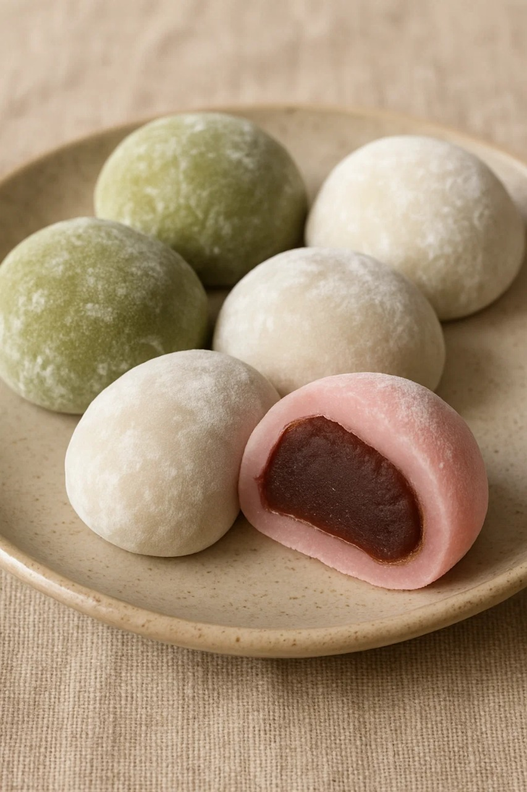
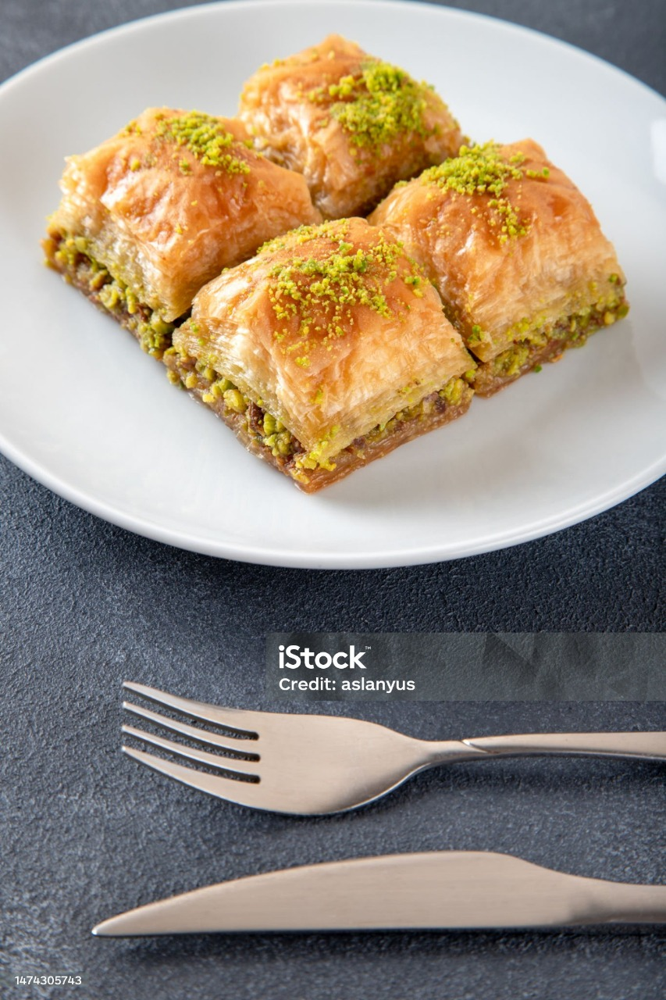
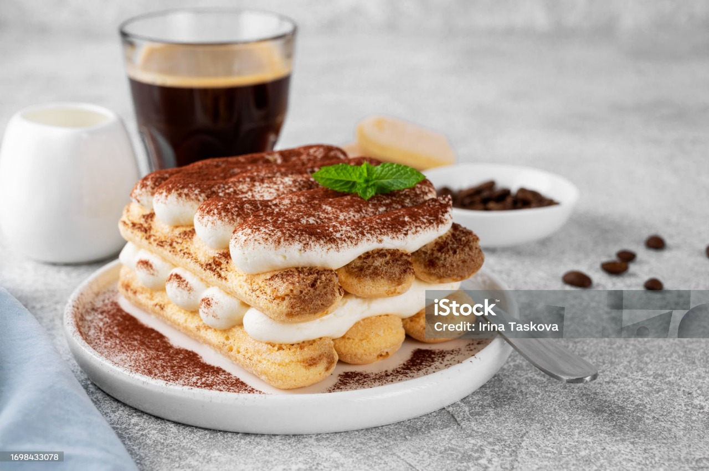
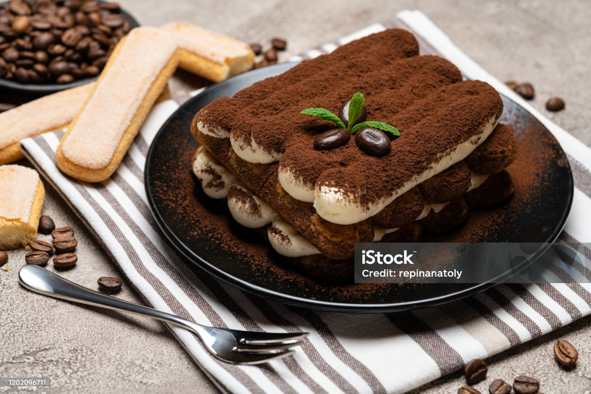
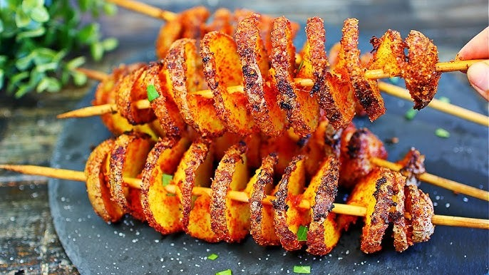
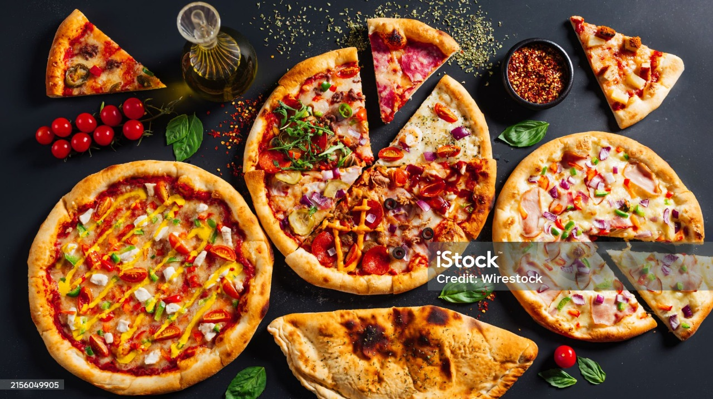
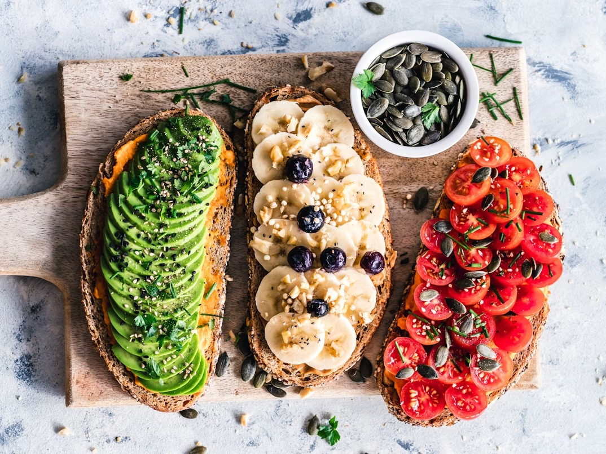

საკვები არის ნებისმიერი ნივთიერება, რომელსაც ადამიანი ან ცხოველი მოიხმარს ენერგიის, ზრდის და ჯანმრთელობის შესანარჩუნებლად. იგი შეიძლება იყოს:
🍡🍰🍫 ყველაზე გამორჩეული დესერტები არის:
მოჩი (Mochi) არის ტრადიციული იაპონური დესერტი ⬇:
🥮⬇ ბაქლავა — აღმოსავლური წარმოშობის უგემრიელესი დესერტი:
🍰 ტირამისუ — კლასიკური იტალიური დესერტი:
 🥗🥑🍛 ყველაზე გამორჩეული კერძები არის:
🥔 ტორნადო კარტოფილი — სპირალურად დაჭრილი და ზეთში შემწვარი კარტოფილი ჯოხზე:
🍕 ვეგანური პიცა — ცომზე დაფენილი ბოსტნეულით მომზადებული უგემრიელესი ვარიანტი:
🥑🍅🍌 ავოკადო, პომიდვრის და ბანანის ტოსტი — ჯანსაღი და სუფთა ვეგანური ვარიანტი:
